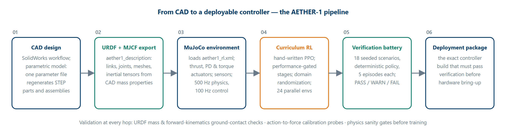
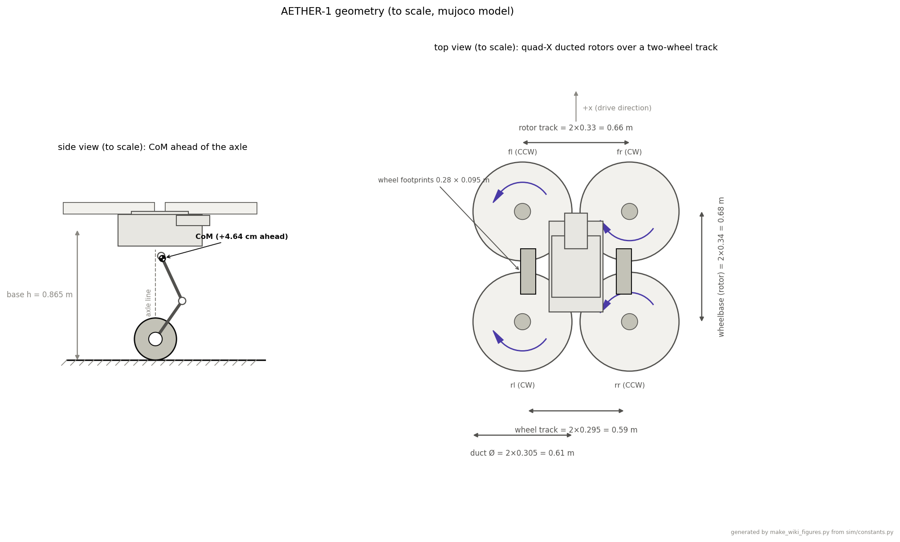
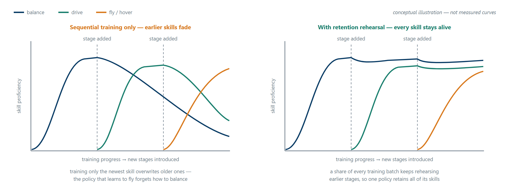
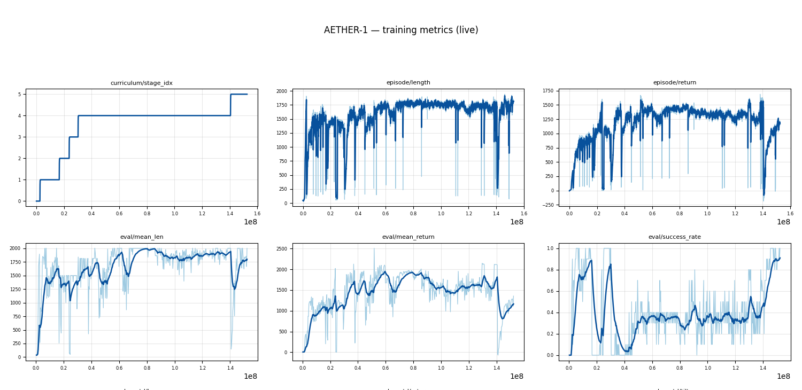

AETHER-1
A hybrid legged-wheeled-aerial robot controlled by one reinforcement-learning policy that balances, drives, flies, lands, and, most importantly, decides for itself when to drive and when to fly, because flying costs roughly ten times more energy than driving.
Project goal
The control problem starts with the base. AETHER-1's 26.47 kg simulation model is a two-wheeled platform whose center of mass sits 4.64 cm ahead of the wheel axle: gravity applies a ≈12 N·m nose-down moment that no static pose or joint stiffness can cancel, and disturbances grow by a factor of e roughly every 0.23 s. Standing still is already a feedback-control task. On that statically unstable, underactuated base sit four tiltable ducted rotors, turning the vehicle into one continuous-action system that must balance, drive, take off, fly, and land, with hard transitions between ground and air dynamics in between. The learning problem is to optimize a single continuous-action policy over that entire envelope under partial observability: lagged actuators, noisy and biased sensors, and only measurements a real robot could obtain onboard.
The reason to solve it on one vehicle is energy. Confined-space drones fly superbly but only for minutes; ground robots run for hours but stop at the first stairwell, drop, or debris field. Hovering burns kilowatts while driving burns watts, roughly a ten-to-one gap, so the target behavior is a robot that drives whenever wheels suffice and spends its precious flight seconds only where they cannot, with the drive-vs-fly decision learned through an energy-priced reward rather than hard-coded. Because the end goal is hardware, sim-to-real transfer is a design constraint from day one: the policy trains under domain randomization, and nothing is cleared for the robot until the exact deployed controller build passes a deterministic verification battery.
From idea to simulation
The robot existed as engineering geometry before it existed as code. The concept was developed into CAD through a SolidWorks workflow, and for the Mk1 hardware demonstrator the CAD is fully parametric: a single parameter file holds every dimension and mass, and re-running the generator produces STEP parts and posed assemblies (which open directly in SolidWorks), STL meshes, and a URDF whose inertial tensors are computed from the CAD geometry. The generated description is validated automatically, the URDF must load, total mass must check out, and a forward-kinematics check must place the wheels on the ground plane to 0.00 mm, so the robot description can never silently drift from the CAD.
The description package, aether1_description, carries the URDF, an MJCF translation,
and the meshes. Reinforcement learning runs on a dedicated model variant,
aether1_rl.xml, which inherits the bodies and inertials unchanged but defines the
actuation truthfully: the four rotors are thrust-native actuators commanded in newtons
(0–110 N per rotor) behind a first-order motor lag of τ = 0.08 s, the six leg joints and
four duct tilts (±25°) track PD position targets, and the two wheels take direct torque.
MuJoCo integrates the physics at 500 Hz while the controller acts at 100 Hz. Getting this hop
right mattered immediately: the exported model's placeholder rotor actuators turned out to be
physically incapable of flight, a story told under Critical challenges.



Implementation & architecture
The training environment wraps the MuJoCo model behind a fixed observation/action contract. The policy sees only what a real robot could measure onboard, proprioceptive state, goal-relative quantities, and notably the applied rotor thrust after the motor lag rather than its own command, so the actuator dynamics are observed instead of hidden. Actions are continuous commands to the legs, wheels, duct tilts, and rotors.
Hybrid by design, not by fallback. The learned policy does not replace classical control, it is composed with it. LQR balance and model-based flight controllers act as stabilizing bases on which the policy learns residual corrections, as independent safety layers, and as honest benchmarks: learned, classical, and hybrid controllers are interchangeable behind one interface and compared on identical seeded evaluations, so every claim that "the learned controller is better here" is a measured one.
The learner. The algorithm is PPO, hand-written in PyTorch rather than imported from a library, running on 24 parallel CPU environments. Skills are grown through a staged curriculum, balance, driving, hover, 3D flight, air↔ground transitions, and finally free drive-or-fly arbitration, and advancement is never scheduled: a stage is passed only when measured success clears its performance gate. Earlier stages are continually rehearsed while new ones are learned, so the policy that eventually flies has not forgotten how to balance. A handful of unglamorous mechanics carried the run: observation-normalization statistics are preserved across stage boundaries so the critic never sees an artificial distribution shift; timeouts are bootstrapped with the critic's own value estimate instead of being treated as crashes; and domain randomization spans mass, thrust asymmetry, sensor bias, actuation latency, wind, battery sag, and floor tilt. The final stage closed at a 0.995 success gate under domain randomization.
Training that polices itself. Because reward-driven learning fails quietly, the run is surrounded by verification: physics sanity probes that recompute geometric quantities from raw simulator state before any reward may use them, an extensive automated test suite, per-term reward accounting that must sum exactly to the step reward, a reward-economics audit that halts training if any stage ever makes failure more profitable than success, and a numeric run monitor that grades the live telemetry against explicit thresholds instead of relying on eyeballs.

Critical challenges
The project's design rules are scars. Four of the hard parts, each told the way it happened: symptom, mechanism, and what was done about it.
A base that is falling by default
The center of mass sits 4.64 cm ahead of the wheel axle, so gravity exerts a ≈12 N·m nose-down moment about the tire contact line the moment an episode starts. No leg stiffness can fix this, leg torques are internal forces; they reshape the robot without changing the net external moment, and the unstable dynamics e-fold roughly every 0.23 s. The resolution is architectural rather than clever: balance is the curriculum's first stage, an LQR regulating around the true equilibrium (a lean of about 5° back, which puts the CoM over the contact line) provides the classical base, and the 100 Hz control rate was chosen to give roughly 23 control actions per divergence time constant. Because leg sag under load shifts the lever, the trim is estimated adaptively rather than trusted as a constant.
The placeholder thrust model that could not fly
The exported robot description gave each rotor a 3 N·m torque actuator on its spin hinge, a URDF-export placeholder, not a motor spec. Working the numbers with actuator-disk momentum theory exposed it: hover needs 64.92 N per rotor, which for this duct implies roughly 700–950 W of realistic shaft power per rotor, and at the 110 N thrust ceiling the required shaft torque is about 5.1 N·m, past the placeholder's cap. Under a hard 3 N·m limit the robot would have a thrust-to-weight ratio of about 1.0: it could levitate, but never climb or reject a disturbance. The fix replaced the hinge actuators with thrust-native actuators commanded in newtons (giving T/W ≈ 1.69) behind the first-order motor lag, and the whole action-to-force chain was then calibrated empirically: commanding exact hover thrust leaves a residual vertical acceleration of +0.024 m/s², 0.25 % of gravity.
Catastrophic forgetting across locomotion modes
A policy trained sequentially on balance, then driving, then flight optimizes whatever it is currently graded on, and quietly overwrites the rest. Left alone, the network that masters hover degrades at driving, and the one that masters flight forgets how to balance; the curriculum would end with exactly one skill. The answer is retention by construction: every stage's training mix keeps a share of episodes from all earlier stages, so old skills keep generating gradient, and a stage only closes when measured success clears its gate. Structural contracts protect what has been learned, too. The observation layout is frozen for the life of the run, and when a new group of actuators comes into play its action mapping is initialized at a physically neutral point instead of rescaling anything already trained (a predecessor project measured ~87 % of actions railing at the clip limits after an innocent-looking rescale).

Reward economies where failure paid
The most expensive failure class in this lineage is the death equilibrium: episode length collapses, termination goes to ~100 %, and the flat return curve hides the fact that the policy has correctly learned that ending the episode is worth more than living through it. With discounting, any stage whose honest-but-sloppy survival nets a negative per-step value makes dying the optimum, and gradient descent will find it. Auditing this project's first-draft stages found several where that held for baseline controllers, plus a subtler trap: a do-nothing policy could settle onto the floor below every crash threshold and absorb a mild penalty forever, a state strictly worse than death because even termination was unreachable. A related class of exploit is physical rather than economic, such as leaning on the rotors while "driving", and those are caught by measuring the cheat at the physical effector (world-frame vertical thrust) instead of at joint coordinates. The fix was to make detection institutional: an automated reward-economics audit recomputes the value of surviving versus terminating for baseline controllers on every stage and blocks training like a failing test, every reward component is logged as its own curve so a farmed term stands out, and every geometric quantity is probed against raw simulator state before it is trusted.
Results & analysis
Two layers of evidence back the claims on this page: the training telemetry of the one-brain run, and an independent, seeded verification battery executed on the exact controller build that would ship to hardware.

The stage-index panel (top left) tells the run's story in one staircase: the first stages clear in roughly the first fifth of the ≈150 million environment steps, then the curriculum holds on its penultimate stage for well over half the run before the final stage unlocks near the 140 M mark. That long plateau is not stagnation, it is the honest price of the hardest skill, trained under domain randomization until its gate was met. The episode-length and return panels (top middle, top right) climb quickly to ~1,750-step episodes and returns in the 1,200–1,500 band, and every sharp dip lines up with a stage introduction: each new stage changes what an episode demands, so length and return briefly collapse and are then re-mastered. The deepest dip sits exactly at the final-stage switch, followed by a fast recovery, the signature of a policy that adapts rather than starts over, which is the retention machinery visibly paying off.
The evaluation row (bottom) repeats the pattern with a deterministic policy. The most informative panel is the success rate (bottom right): it spikes toward ~0.9 as early stages are mastered, then collapses toward zero each time a new stage arrives, not because the robot got worse, but because the success criterion itself just got harder. Through the long penultimate stage it grinds in the 0.3–0.4 band, and at the end of the visible window it climbs above 0.9 on the final stage. The overview is a live snapshot taken mid-run; the curriculum subsequently closed its final stage at a 0.995 success gate under domain randomization.
The verification battery is the independent check on the deployed build: 18 scenarios, 5 seeded episodes each, deterministic policy, measured on the exact controller artifact that would run on the robot. It currently stands at 14 PASS / 4 WARN / 0 FAIL, with no divergence and no NaN in any episode. Driving to ground goals across the 1–8 m envelope succeeds in every episode with final goal distances of 0.17–0.19 m and final tilt around 4°; flight to air goals with hover-hold likewise succeeds everywhere, station-keeping within 0.18–0.20 m. The rotor-to-wheel landing handoff completes in every seeded episode, touching down at 0.14–0.15 m/s and settling upright within 9°. A seven-axis robustness sweep, wind, +20 % mass with a +2 kg payload, rotor asymmetry, battery sag, sensor bias, one-step action latency, and floor tilt, succeeds on all seven axes; the heavy-configuration case carries a WARN because its worst episode heeled to 43° before recovering, even though every episode still succeeded.
The honest weak spot is mission_full_handoff, the chained takeoff → fly → land → drive mission, at 0.60 success. Each individual capability passes near-perfectly in isolation; chained, their small errors compound. A modest touchdown offset becomes the driving leg's initial error, and the worst episode reached 13–33° of tilt with about 1.9 m of station error. This is precisely the failure class the battery exists to surface before hardware does: the failing seeds are recorded as full state/action traces for replay and analysis. The remaining WARNs are of the same character, landings that succeed but bounce more than the single-bounce target on their worst episode, and a gust-during-touchdown edge case that sits exactly at its 0.40 acceptance floor, marking touchdown under strong gusts as the weakest edge of the envelope. Qualitatively, the montage below shows what the numbers summarize: the same policy balancing, driving, and flying in the verification simulator.
Future work
- Close the chained-mission gap. Use the recorded failure traces from the 0.60-success handoff scenario to drive the next training/verification iteration, so the full mission chain clears the battery before hardware is asked to fly it.
- Replace guessed constants with measured ones. Staged test rigs for the Mk1 program measure what simulation could only assume, thrust maps, motor lag, and the other research-tunable parameters, and feed the measurements back into the model.
- Build and bring up the Mk1. Finish procurement and assembly of the 15 kg demonstrator and execute the safety-gated bring-up procedure, sensor and actuator checks first.
- Tethered flight tests. Graduate from bench rigs to constrained flight, then to the full drive → fly → land → drive demonstration on hardware.
- First pilot conversations. Take the demonstrator's results to industrial-inspection operators, where the drive-long/fly-short energy profile matters most.